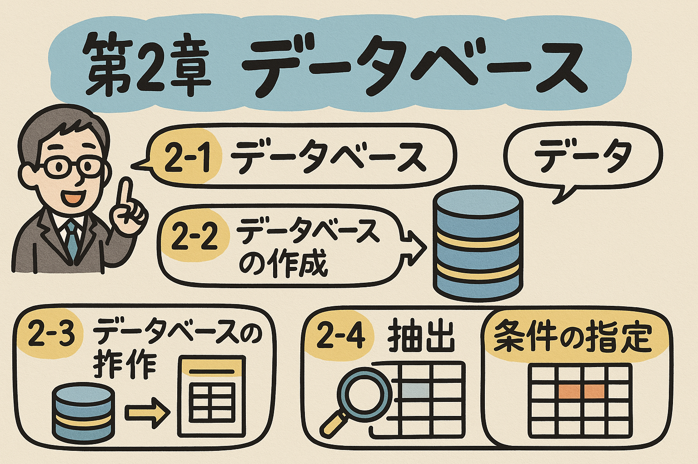

データベース（DB）とは複数のアプリケーションで共有し利用することを目的とした、相互に関連するデータの集合です。
現在最も広く利用されているのが関係データベースです。データは表（テーブル）形式で表現されます。
| 会員ID | 氏名 | 電話番号 |
|---|---|---|
| 001 | 鈴木太郎 | 090-XXXX-XXXX |
| 002 | 佐藤花子 | 080-XXXX-XXXX |
主キーはテーブル内のレコードを一意に識別するための列（または列の組み合わせ）です。
SQL（Structured Query Language）は、データベースを操作するための標準言語です。
データベースを効率的に設計・構築するには、次のステップで進めます：
参照制約（外部キー制約）は、テーブル間の関連性を保つためのルールです。
「注文テーブル」の「会員ID」は「会員テーブル」の「会員ID」を参照する
→ 存在しない会員IDでの注文は登録できない
DBMS（Database Management System）は、データベースを管理・操作するためのソフトウェアです。
SQLを使用した主なデータ操作：
| 操作 | SQL文 | 説明 |
|---|---|---|
| 検索 | SELECT | データの抽出 |
| 挿入 | INSERT | 新規データの追加 |
| 更新 | UPDATE | 既存データの変更 |
| 削除 | DELETE | データの削除 |
排他制御は、複数ユーザーが同時にデータを更新する際の整合性を保護する仕組みです。
悲観的排他制御：データにロックをかけて他のユーザーがアクセスできないようにする
楽観的排他制御：更新時に他のユーザーが変更していないか確認する
トランザクションは、一連の処理をひとまとまりとして扱う単位です。
トランザクションのACID特性：
| 特性 | 説明 |
|---|---|
| Atomicity（原子性） | 処理が全て成功するか、全て失敗するか |
| Consistency（一貫性） | 処理前後でデータの整合性が保たれる |
| Isolation（独立性） | 処理が他のトランザクションから隔離される |
| Durability（永続性） | 確定した処理結果は永続的に保存される |
リカバリは、障害発生時にデータを復旧する機能です。
論理演算を視覚的に表現するベン図は、データの抽出条件を理解するのに役立ちます。
SQLの検索では、複数の条件を組み合わせるために論理演算子を使用します：